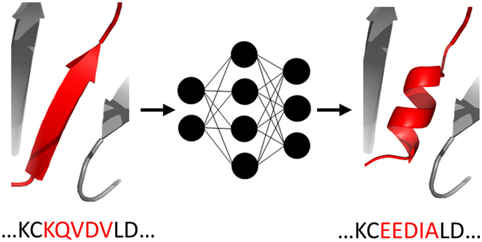

Machine learning#
Machine learning (ML) is a widely applied tool from computer science with applications in fields ranging from mathematics over engineering to natural and even social sciences.
ML models#
There are a multitude of ML models developed for different purposes and to navigate the landscape can seem overwhelming. A broad categorization includes the classes:
Supervised Learning Models
These models learn from labeled data to make predictions or classify new data.Linear Regression: Predicts continuous values by identifying the relationship between input variables and a dependent variable.
Logistic Regression: Used for classification tasks, determining if an input belongs to a specific group.
Decision Trees: Create a flowchart-like structure to make predictions by traversing through nodes and leaves based on features.
Random Forests: An ensemble method that combines multiple decision trees to improve prediction accuracy and reduce overfitting.
Support Vector Machines (SVM): Creates a hyperplane to separate data points into categories based on their features.
K-Nearest Neighbors (KNN): Groups data points based on their similarity to their ‘k’ closest neighbors in the dataset.
Naive Bayes: A probabilistic classifier that uses Bayes’ Theorem and assumes independence among variables.
Unsupervised Learning Models
These models find patterns and structures in unlabeled data.K-Means Clustering: An algorithm for grouping data into ‘k’ distinct clusters based on similarity.
Deep Learning Models
A subfield of machine learning that uses artificial neural networks with multiple layers to learn from vast amounts of data. Neural networks are a foundational component and essential technology within the field of artificial intelligence (AI).Feedforward Neural Networks (FNNs) The simplest type of neural network, where data moves in one direction from input to output, without loops or cycles. Applications: Used for tasks like image recognition and speech recognition, where data is processed without a temporal component.
Recurrent Neural Networks (RNNs): Networks designed to process sequential data by using connections that create cycles, allowing data to flow back and forth. They possess an “internal memory” to understand the order and context of inputs. Applications: Ideal for natural language processing, speech recognition, handwriting recognition, and other tasks involving time-series data.
Convolutional Neural Networks (CNNs): A specialized type of neural network based on multilayer perceptrons but with convolutional layers designed to extract spatial hierarchies of features from data. Applications: Highly effective for computer vision tasks such as image classification, object detection, and image generation.
Transformer Networks: A modern neural network architecture that relies on self-attention mechanisms to weigh the importance of different parts of the input data. This allows them to capture long-range dependencies more effectively than RNNs. Applications: Revolutionized natural language processing (NLP) and are a foundational technology behind large language models like ChatGPT, enabling tasks such as machine translation and text generation.
ML frameworks#
A ML framework is a software (predominantly based on Python) into which ML models can be implemented and run.
Owing to their simple nature and vast possibilities for their application, multiple ML frameworks exist that enable you to build and train a model with just a few lines of code. We will illustrate things with the classic example of identifying digits in hand-written images. The two ML frameworks we have adopted for this task are among the most used ones:
ML with sklearn: Easy to use for supervised and unsupervised models.
ML with PyTorch: Developed by Meta AI and together with TensorFlow by Google, they are the dominant frameworks for deep learning and consequently AI.
What is a neural network#
If you choose a project in the category of machine learning, it is highly recommended (close to mandatory) that you also take the time to watch the series of four videos on neural networks from the (generally) excellent channel 3Blue1Brown.
Forming your project#
Data representation in the input layer#
In many cases, such as in classifications of images, it is rather obvious how to represent the input data in the input layer namely by associating neurons to the pixels in the images.
In other cases, it may be less obvious. How do we e.g. represent molecules and how can we get an objective measure of closeness of chemical structures? In answer to these questions, molecular fingerprints have been developed.
Machine Learning-Guided Protein Engineering#
Find inspiration for using machine learning in protein engineering in the perspective article below. The authors provide an overview of ongoing trends in this domain, highlight recent case studies, and examine the current limitations of machine learning-based methods. They present their opinions on the fundamental problems and outline the potential directions for future research.
{kind=link}
ACS Catalysis 2023, 13, 21, 13863–13895, https://doi.org/10.1021/acscatal.3c02743
Previous course projects#
Identification of risk factors for cardiovascular disease using data analysis and machine learning (Project from CB1020 HT24)
Cardiovascular disease (CVD) is the leading cause of death in Sweden, with over 2 million affected and approximately 30,000 annual deaths.
The aim of this project was to use data analysis combined with the machine learning algorithmsGradientBoosting,RandomForest, andSHAPin sklearn to investigate which five factors contribute most to CVD, and to use machine learning to predict whether a person has CVD or not.
The project analyzed a file with patient data from 70,000 people in twelve different categories: age, height, weight, gender, systolic blood pressure, diastolic blood pressure, cholesterol level, glucose level, smoking, alcohol intake, physical activity and presence or absence of cardiovascular disease.
The five most important risk factors for CVD were identified as systolic and diastolic blood pressure, BMI, age, and cholesterol. The results showed that older people and individuals with higher BMI had an increased risk of CVD, which is consistent with previous research.
The machine learning algorithmsGradientBoostingandRandomForestdemonstrated a test accuracy of 73.6%, with a better ability to identify CVD cases than non-CVD cases. Data analysis also indicated that there were shortcomings in the representation of different age groups and gender, which may have influenced the results.